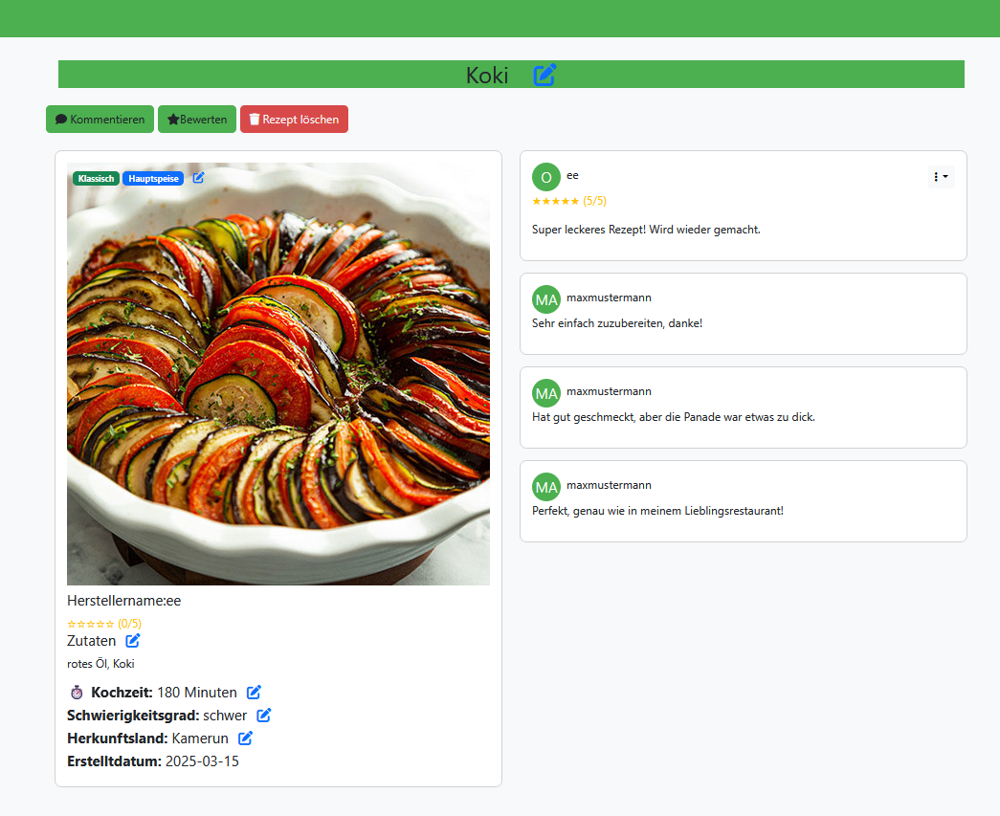

Projekt 1: Web-App
Webanwendung zur Verwaltung von Nutzern und Rezepten namens X-Chef; Erstellung, Kommentieren und Bewertung von Rezepten ermöglicht
- 👉 Server mit Vertx anlegen
- 👉 Java JDBC mit Java HTTPClient
- 👉 Cybersecurity-Prevention mit "Java session" und "prepared queries"
- 👉 Maven template Engine für dynamische Seiten
Technologiestacks
- GitLab
- MariaDB
- apiDoc
- Vert.X
- HTML, CSS & JavaScript